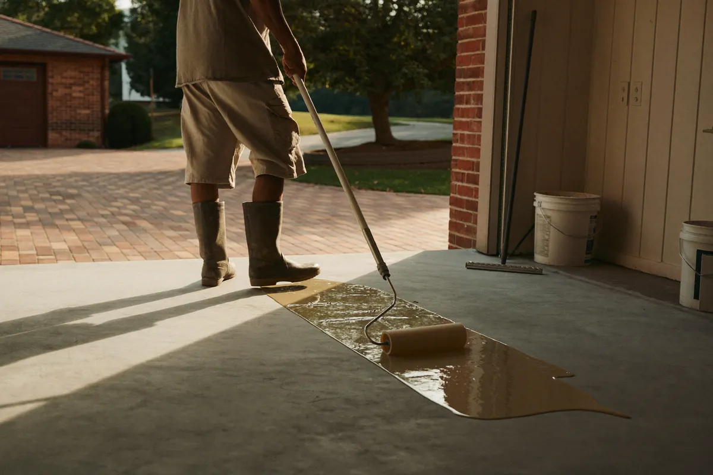

A tough, UV-stable coating that cures fast, so your garage is back in use in about a day instead of a week.
Call (972) 640-6524 for a Free EstimateTell us about your floor and we'll call you back the same working day.
Prefer to talk? Call (972) 640-6524

Polyaspartic floor coating in Irving is the fast-cure option for garages, patios and pool decks. It goes down like epoxy but sets in hours, stays clear in direct sun and flexes slightly better as temperatures swing. For a busy household that can't give up the garage for a week, it's often the best fit.
Polyaspartic is a type of polyurea coating. The prep is the same as any quality floor: diamond grinding, crack repair and a careful clean. From there it can be used as the full system or as the clear topcoat over a flake base.
Because it cures fast, the crew mixes small batches and works in sections. On most garages the base, flakes and topcoat all go down in a single day, and the floor is ready for light foot traffic that evening.
Polyaspartic makes the most sense when speed or sun exposure is a concern. It's the right call when:
Standard epoxy resin isn't UV-stable. When sunlight hits it day after day, the surface slowly ambers and can turn chalky, which shows most at the front of the garage where the door opens.
Polyaspartic is built to resist UV breakdown, so it keeps its color and gloss even with the door up on long summer afternoons. That's why we use it as the topcoat on nearly every garage system.
The size of the floor and how much repair the slab needs are the biggest factors. A garage with heavy oil staining or a peeling old coating takes more grinding than a clean, newer slab.
Whether you want a full polyaspartic system or a flake base with a polyaspartic topcoat also changes the quote. Outdoor areas may need extra texture for grip. We'll walk through the options and give you a written price at the free estimate.
| Polyaspartic | Traditional epoxy | |
|---|---|---|
| Cure time | Hours; garage back in about a day | Several days before parking |
| Sun and UV | Stays clear, won't yellow | Ambers over time in sunlight |
| Install window | Wide temperature range | Needs mild, steady temperatures |
| Working time | Short; needs an experienced crew | Longer, more forgiving |
| Best for | Garages, patios, pool decks | Base coats and indoor spaces |
In Irving, most garages get the best of both: an epoxy base coat for a deep bond and a polyaspartic topcoat for sun resistance and fast return to service. Fully indoor spaces with no sunlight can do well with an all-epoxy system.
It's usually ready for foot traffic in a few hours and for cars in about 24 to 48 hours, depending on temperature and humidity. We give you the exact timing for your floor on install day.
Yes. Because it resists UV, it works on covered patios and pool decks. We add texture to the topcoat so the surface isn't slick when it gets wet.
It's harder and more abrasion resistant as a topcoat, and it handles sun much better. Epoxy still bonds well as a base coat, which is why the two are often used together.
There's a noticeable odor during the install. It fades quickly as the coating cures, and we keep the garage door open and the house door closed while we work.
Call Irving Epoxy Flooring at (972) 640-6524 or send the form at the top of this page. We'll come out, measure and give you a written quote.